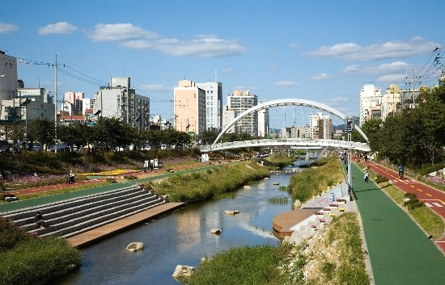
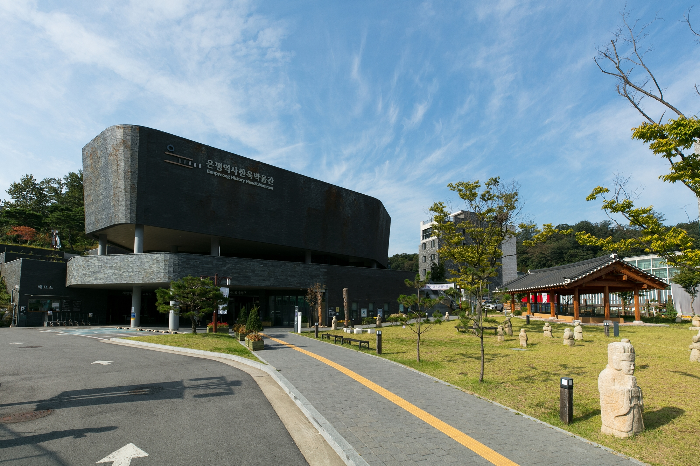
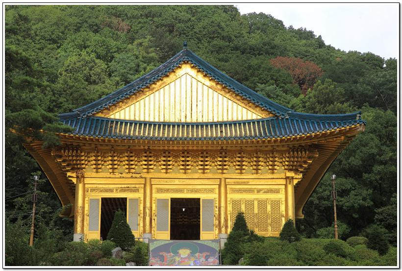
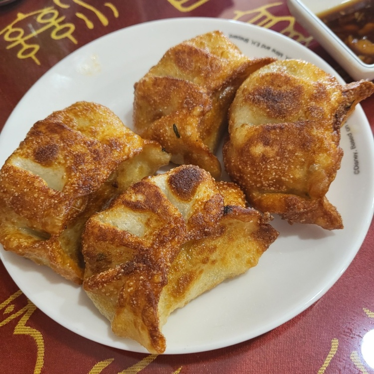
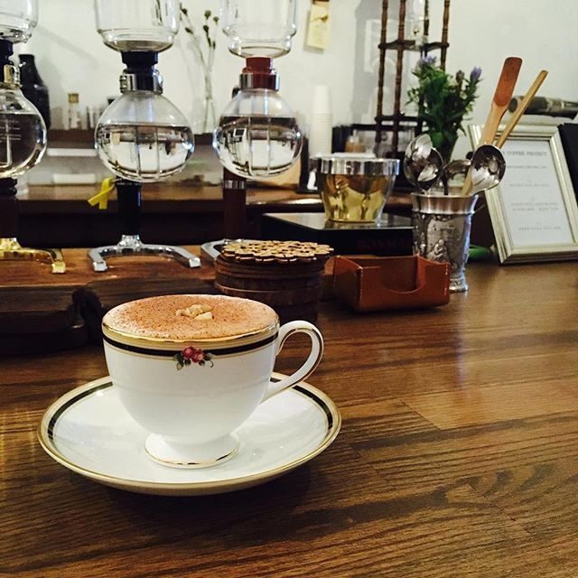
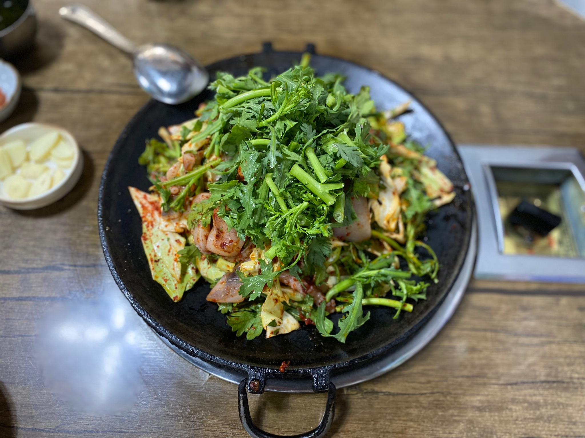

불광천서울특별시 은평구 불광동 북한산 산기슭에서 시작되는 개천이며, 한강으로 흐르는 건식 개천이다. 매년 4월 초에서 중순 무렵에는 불광천 양쪽에 벚꽃이 만개하여 벚꽃길이 조성되는데 이 시기에 대규모 벚꽃축제나 콘서트를 진행한다. 콘서트에 연예인이 초청되기도 하며 구립 합창단이 공연을 하기도 한다. 평점 - |
 |
은평역사한옥박물관은평구에 최초로 지자체가 건립한 문화역사박물관이다. 박물관이 세워진 진관동 지역은 은평뉴타운 사업으로 많은 곳의 땅이 파헤졌는데, 은근히 역사적 가치가 있는 유물들이 많이 발굴된 덕분에 SH에서는 뉴타운 주민들의 문화생활공간을 창출할 겸 이러한 유물들을 전시할 공간을 확보하기 위해 은평뉴타운 사업계획에 미리 박물관 계획을 포함시켜 두었다. 이후 단독주택부지의 저조한 분양률로 인해 한옥마을부지로 개편됨에 따라, '한옥' 이라는 테마를 가진 박물관의 특성이 추가되어 은평 '역사한옥' 박물관이 되었다 관람시간은 오전9시부터 오후6시까지이며, 입장은 폐관시간 1시간 전까지, 그러니까 오후 5시까지 입장이 가능하다. 평점 4.45/5 |
 |
수국사서울특별시 은평구 구산동에 있는 절 크기는 5층짜리 건물 정도이고 나무에 얇은 순금을 입혀서 지어졌다 평점 - |
 |
마마수제만두서울특별시 은평구 증산로 397 추천메뉴 : 산동짜장면, 고기 군만두, 딤섬 평점 3.7/5 |
 |
YM커피프로젝트서울특별시 은평구 연서로29길 21-8 추천메뉴 : 시그니쳐 메뉴 평점 3.9/5 |
 |
원조두꺼비불오징어서울특별시 은평구 연서로28길 5 추천메뉴 : 오징어 삼겹살 평점 3.7/5 |
 |